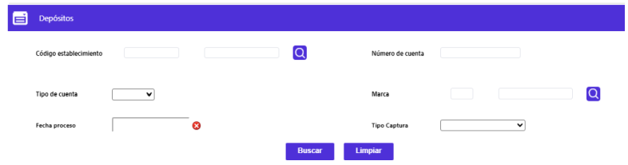
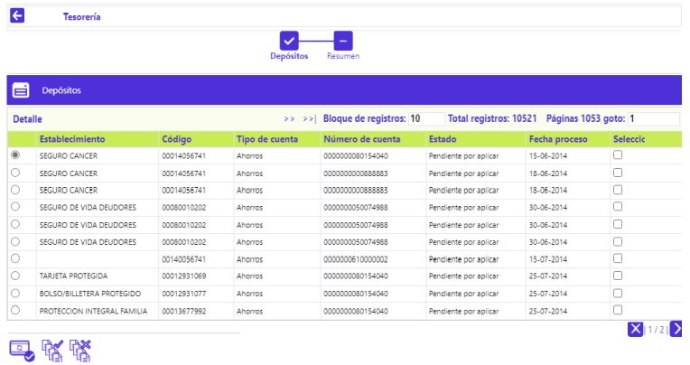
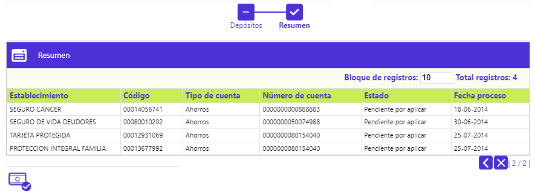

Tesorería
Mediante esta función se permite la administración de las afectaciones a las cuentas corrientes o de ahorro de los establecimientos, producto de todas las posibles fuentes de movimiento transaccional que tengan relación o como destino las cuentas de depósito de los comercios.
El formulario cuenta con un filtro de búsqueda inicial y la opción Detalle.

Filtro: Se pueden realizar consultas a través de las siguientes opciones:

|
Código establecimiento |
El campo Establecimiento admite cualquier valor numérico de máximo once dígitos. |
|
Tipo de cuenta |
El campo tipo cuenta es un combo con los valores ahorros, corriente, rotativo y en blanco, de donde el actor puede seleccionar aquel que desea consultar. |
|
Número de cuenta |
El campo número de cuenta es alfanumérico y admite cualquier valor de hasta 16 posiciones. |
|
Fecha proceso |
El campo fecha proceso admite cualquier fecha válida en formato YYYY-MM-DD |
|
Tipo consulta |
El campo tipo consulta debe estar marcado y comportarse como obligatorio. Es un combo con los valores Depósito, Histórico e Interfase de donde el actor selecciona sobre cual de ellos desea efectuar la consulta. |
Detalle: Mediante esta opción se posibilita la consulta de los depósitos efectuados en las cuentas de los establecimientos producto de las consignaciones efectuadas y cuyo movimiento supera las validaciones exitosamente.
Si el usuario invoca la opción Detalle se despliega un formulario con los siguiente bloques: Recepción, Fechas y otros, Totales leídos, Totales procesados, y Otros valores. Adiiocnalmente, cuanto con el globo para acceder a la Información de localización.

Recepción: Grupo de datos que ilustran la manera como ingresó la transacción al sistema.
|
Origen |
Contiene el nombre que identifica el origen o fuente del movimiento definidos en la opción Orígenes de transacciones del Núcleo. |
|
Transacción origen |
Campo que despliega de manera genérica el nombre asociado a cada tipo o clase de transacción contenida dentro del archivo del movimiento. |
|
Fecha proceso |
Campo con formato YYYY-MM-DD ilustra la fecha en que se efectuó el proceso del archivo en que viajó la transacción enviada a Movimiento diario y a Depósitos. |
|
Secuencia recepción |
Campo de salida que ilustra el número con el que se identifica el cargue de archivos o integración del movimiento ingresado por un mismo origen para una misma fecha de proceso. |
|
Moneda |
Despliega el nombre oficial de la Moneda que identifica la moneda original de la transacción. |
|
Número lote |
Campo que ilustra el número del paquete que identifica el movimiento por clase o tipo de transacción, lo que facilita su ubicación en caso de ser necesario. |
|
Sucursal adquirente |
Campo de salida que despliega el código que identifica la oficina por medio de la que ingresó el movimiento. |
|
Establecimiento |
Campos que despliegan tanto el código único como el nombre o razón social del establecimiento en cuya cuenta se realiza el abono |
|
Entidad |
Campos que muestran el código y nombre de la entidad receptora del depósito. |
|
Descuento incluido |
Opción que determina si el descuento está o no incluido. |
Fechas y otros: de datos asociados a las fechas de abono, cuenta en la que se efectúa el depósito y estado de la consignación entre otros.
|
Número cuenta |
Despliega el número de la cuenta de depósitos perteneciente al establecimiento de comercio en la que se realiza el abono. |
|
Tipo cuenta |
Identifica si el número de cuenta del establecimiento corresponde a corriente, Rotativo o ahorros. |
|
Fecha depósito |
Campo en formato YYYY-MM-DD que muestra la fecha en que el establecimiento realiza la consignación. |
|
Fecha abono |
Despliega la fecha, en formato YYYY-MM-DD, en que se aplica efectivamente el abono en la cuenta del establecimiento. |
|
Número consignación |
Contiene el número de recibo con el cual se efectuó la consignación. |
|
Estado consignación |
Campo que puede tomar alguno de los siguientes valores: A Pagado totalmente afecta ctas ctes, E Estadísticas establecimientos, L Listo para pagar, P Pendiente por aplicar, T Generando estadísticas, M Pagar totalmente, O Pagar parcialmente, o Incluir Interface. |
|
Concepto consignación |
|
|
Modalidad abono |
Campo que puede tomar alguno de los siguientes valores: C Contado, D Diferido o T Tesorería. |
|
Indicador de cashback |
Cuando el establecimiento en el cual se realizó la transacción posee esta característica indica que el valor registrado como Propina corresponde a un Avance hecho por el cliente en dicho establecimiento. Los posibles valores del campo son "0" en caso de no tener cashback ó "1" cuando el establecimiento si tiene esta condición. |
Totales leídos, Totales procesados: Grupo de campos que contienen información simultáneamente cuando corresponden a cargue de archivos o integración de movimiento; en caso contrario únicamente aparecerá información en uno de los dos, lo que permite mostrar de manera consolidada por concepto el movimiento aplicado al diario que genera el depósito.
|
Número comprobantes |
Muestra la cantidad de comprobantes leídos y/o procesados. |
|
Valor ventas |
Señala el valor acumulado de los consumos realizados en los establecimientos. |
|
Valor comisiones |
Señala el valor consolidado de los descuentos o comisiones liquidados y descontados del monto consignado por el establecimiento, acorde con lo parametrizado en el campo Captura requiere ingreso descuento de la opción Parámetros operativos del grupo de Tablas corporativas del Núcleo. |
|
Valor propinas |
Contiene el valor acumulado de las propinas concedidas por los clientes relacionados con los consumos efectuados. |
|
Valor consignado |
Despliega el valor consignado al establecimiento; puede tener en cuenta o no el valor del descuento o comisión acorde con lo definido en el campo Captura requiere ingreso descuento definido en la opción Parámetros operativos. |
|
Valor Total |
Campo que contiene la sumatoria de los valores contenidos en los campos Vlr ventas, Vlr propinas y Valor IVA. |
Otros valores: Conjunto de información adicional sobre montos no contenidos o contemplados en los campos anteriores pero que afectan los saldos de las cuentas de los establecimientos.
|
Tipo operación |
Campo de salida que permite identificar la naturaleza (débito o crédito) que representa el depósito, dependiendo de si trata de una reversión o abono por concepto de Retención en la fuente, Valor descuento, Retención IVA, Consignación o Efecto al cobro. |
|
Boleta de ruta |
Corresponde al número consecutivo de los comprobantes de control permitidos por cada oficina en la captura del movimiento, producto de la operación diaria. |
|
Fecha contabilización |
Corresponde a la fecha de contabilización del movimiento, la cual regularmente, corresponde a la fecha de proceso, sin embargo cualquier registro podría llegar con una fecha diferente de contabilización, por tal razón se muestra esta información en este campo. |
|
Valor pagar |
Campo numérico de 18 posiciones, no obligatorio, en el que se registra el monto que será consignado en la cuenta de los establecimientos, cuando éste presenta movimiento de notas débito y crédito, de tal manera, que permite definir la cantidad a ser consignada al establecimiento puesto que por efectos de validaciones y seguridad, la entidad puede determinar no realizar un pago total por este concepto. Sin embargo, en caso de que no se capture ningún valor, se tomará el valor que aparecerá en el campo valor a pagar. |
|
Valor pagado |
Indica los valores que ya han sido consignados a los establecimientos. |
|
Valor a consignar |
Campo que muestra el monto total definitivo con el cual se debe afectar la cuenta del establecimiento. |
|
Nota Crédito |
En el evento de que dentro del total de afectación al establecimiento se deban considerar otros valores correspondientes a ajustes, en este campo se informa dicho valor. |
|
Nota Débito |
En el evento de que dentro del total de afectación al establecimiento se deban considerar otros valores correspondientes a ajustes, en este campo se informa dicho valor. |
Información de localización: Si el usuario invoca el globo de localización ubicado en la parte superior derecha de la pantalla, se despliega un formulario con los siguientes campos:

|
Valor IVA leído |
Refleja el valor cancelado por el cliente por dicho concepto. |
|
Valor base reintegro IVA |
Este campo despliega el valor que sirve como base para el calculo del reintegro de los 2 puntos de IVA sobre compras y que corresponde al valor de los bienes y/o servicios gravados con una tarifa del 16%; a partir del 2005 también quedarán incluidos aquellos que estén gravados con un IVA del 10%. |
|
Valor IVA procesado |
Refleja el valor cancelado por el cliente por dicho concepto procesado. |
|
Valor Reteiva |
Campo que despliega el monto retenido por la entidad adquirente por dicho concepto acorde con los parámetros correspondientes (%base retención y %rete-iva) definidos en Información de establecimientos, o en Tipos de servicio o en Parámetros operativos lo que no aplica para los establecimientos que son autorretenedores. |
|
Valor retefuente |
Indica el monto descontado o valor en que es disminuida la consignación por concepto de la retención en la fuente liquidada sobre la base de retención calculada para los consumos, lo que no aplica para los establecimientos que son autorretenedores. |
|
Valor retención Ica |
Indica el monto descontado o valor en que es disminuida la consignación por concepto de la retención por concepto del impuesto de industria y comercio liquidado sobre la base de retención calculada sobre los consumos, acorde con los parámetros correspondientes (%base retención ica y %rete-ica) definidos en la opción Información de establecimientos lo que no aplica para los establecimientos que son autorretenedores. |